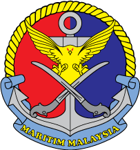

Agensi Penguatkuasaan Maritim Malaysia
Kementerian Dalam NegeriTHE ALBATROS
KIK PRIMER MRSC KUANTAN
LIVE PRODUCTION • TRL 9 SIAP GUNA
MARITIME SEARCH AND RESCUE (SAR) MANAGEMENT SYSTEM
Portal Pusat Kawalan Bersepadu & Hab Akses Dokumentasi Sistem Inovasi Digital Pencarian dan Penyelamatan Maritim Malaysia
Modul Tindakan & Akses Sistem
Klik kad di bawah untuk melancarkan akses
📄 Buku Laporan KIK
Dokumentasi penuh 29 muka surat piawaian format KIK APMM 2026 (Ringkasan Eksekutif, Perincian Projek & Siri Lampiran).
29 Muka Surat
Format APMM 2026
Lampiran Lengkap
Akses Sekarang
➔
📊 Slaid Pembentangan
Slaid persembahan rasmi Google Slides / Canva untuk sesi penilaian panel juri.
Mod Skrin Penuh
Google Slides HD
Format Eksekutif
Akses Sekarang
➔
🎬 Video Montaj & Demo
Rakaman video montaj inovasi, pengujian operasi lapangan (SAREX), dan demonstrasi kefungsian dwi-sistem.
Pemain Terbina Dalam
Ujian Lapangan SAREX
Demo Dwi-Sistem
Akses Sekarang
➔
🖥️ SMC Command Dashboard (Web Live)
Sistem kawalan bilik operasi Pusat Koordinasi Penyelamat Maritim (MRSC) berasaskan Leaflet GIS dan awan Supabase.
Bilik Operasi MRSC
Leaflet GIS Pemetaan
Awan Supabase Real-time
Datum Drift IAMSAR
Akses Sekarang
➔
📱 SRU Mobile Navigator Apps (PWA Live)
Aplikasi navigasi taktikal luar talian (offline resilience) untuk bot/kapal operasi di laut.
Progressive Web App (PWA)
Offline Resilience di Laut
Kompas GPS Taktikal
Aset SRU Bot & Kapal
Akses Sekarang
➔